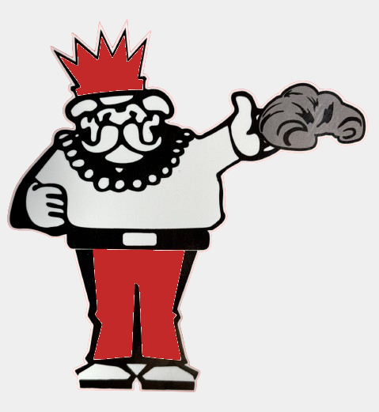

.svg)
.svg)

Developer passionate about technology and innovation.
I am looking for my first opportunity in the field of front-end and back-end development. I already have experience in IT support and maintenance, and now I am seeking new challenges in web development.
If you would like to know more about my career in IT, please refer to my resume with more detailed information.
I worked in electronics sales and maintenance services, including screen repairs, battery, connector, and peripheral replacements. I also performed data transfer and backup, as well as restoration and updating of portable devices.
Customer service. Explanation of mobile phone and notebook features. Data transfer and backup.
I worked in technical support, handling tickets and using remote access tools for diagnosis and troubleshooting. I was also responsible for log verification and managing the backup routine, ensuring data integrity and security.
I was responsible for network mapping and switch configuration, as well as disk cloning using Ghost. I also performed Active Directory configuration and managed the backup routine, ensuring system efficiency and data security.
This project was developed during my studies, using HTML and CSS technologies to build the interface, with a parallax effect to enhance the visual experience.
This project was developed during my studies, using HTML and CSS technologies to build the interface. It presents the history of Android and marks my first project with responsive design.
I developed this coffee shop website during my studies, using HTML, CSS, and JavaScript. It was my first project with JavaScript, where I created visual effects and also implemented a functional hamburger menu.
